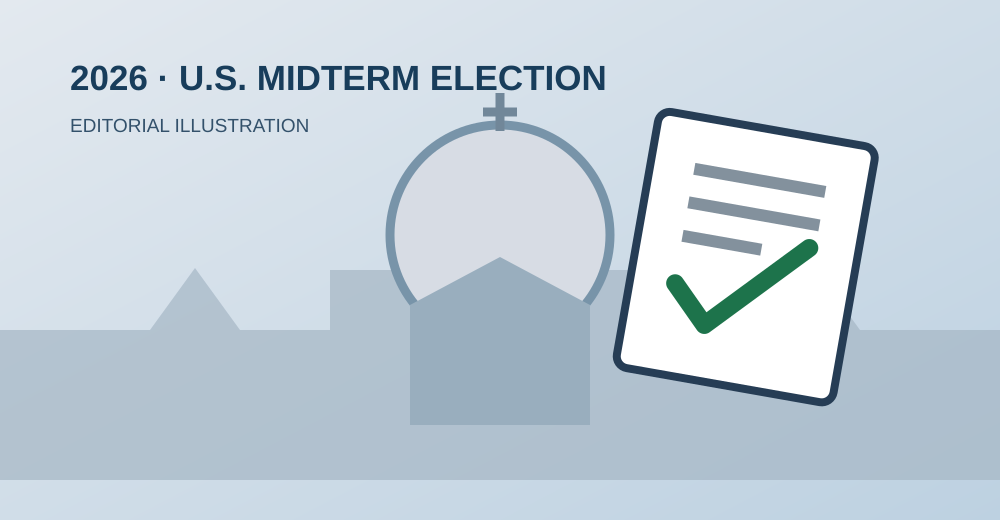

历史性一票：利奥十四世成为首位已知在任期间参加美国选举投票的教皇
梵蒂冈10月30日确认，教皇利奥十四世通过邮寄选票参加11月3日美国中期选举，成为首位已知在任期间投票的教皇。

罗马 / 美国 — 在2026年11月3日美国中期选举到来之际，梵蒂冈新闻办公室于10月30日确认，美国出生的教皇利奥十四世（Pope Leo XIV）已向美国伊利诺伊州芝加哥提交邮寄选票。多家媒体称，他成为历史上首位已知以在任教皇身份参加美国大选投票的人。
利奥十四世出生于芝加哥，原名罗伯特·弗朗西斯·普雷沃斯特（Robert Francis Prevost）。虽然如今担任天主教会领导人，他仍保有美国国籍。梵蒂冈强调，教皇长期重视公民参与，在符合资格的时候就会行使投票权。
为什么这一票具有历史意义？
美国总统选举与国会中期选举都是公民参与政治生活的重要渠道。2026年的中期选举将改选全部435个众议院席位，并有部分参议员和各州州长职位进行选举。身为教皇的利奥十四世继续以美国公民身份投票，凸显了宗教领袖身份与公民权利之间较为罕见的交集。
需要特别澄清的是：这不是利奥十四世生平第一次投票。梵蒂冈明确表示，他过去在美国及居住秘鲁期间也曾在符合资格时参与选举；此次具有历史意义的是“在任教皇投票”这一身份。
投给谁？梵蒂冈没有披露
梵蒂冈没有公开教皇的具体投票选择，因此不能推断他支持哪位候选人或哪个党派。教皇在公开声明中强调的核心原则，是公民参与民主程序的权利与责任。
这一消息由梵蒂冈官方于2026年10月30日确认，本报道刊载日期为2026年11月3日。新闻日期与实际投票日应予区分。
English Summary
The Vatican confirmed on October 30, 2026, that Pope Leo XIV submitted a mail-in ballot in Chicago for the November 3 U.S. midterm elections. He is the first known sitting pope to vote in a U.S. general election. This was not his first vote as an individual. The Vatican did not disclose his candidate choices.